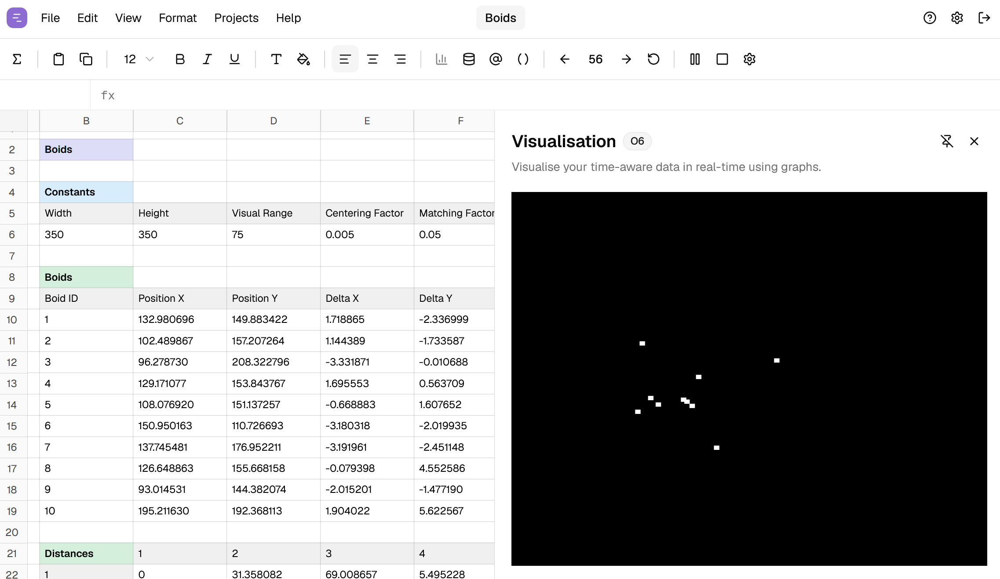
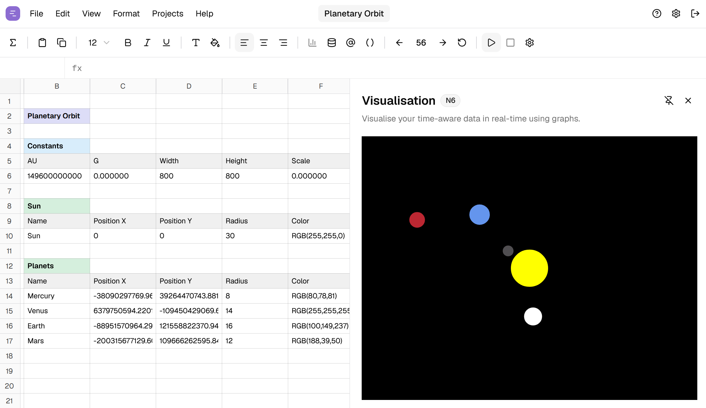
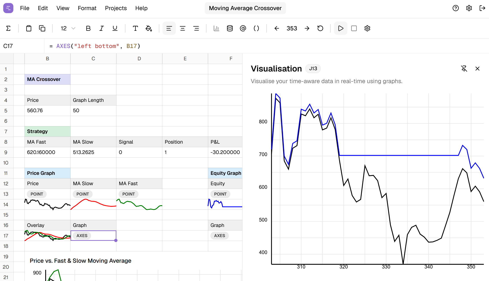
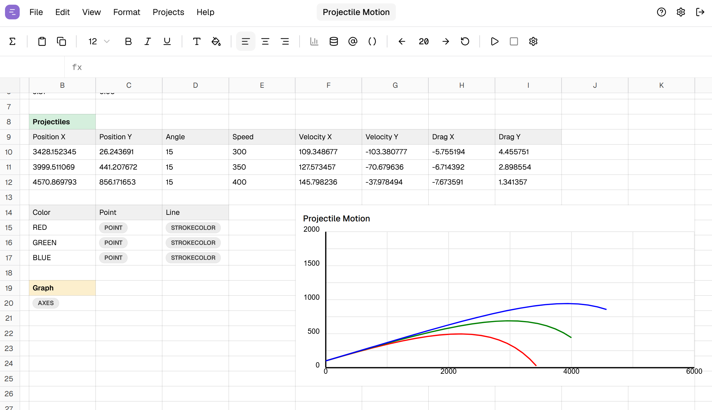
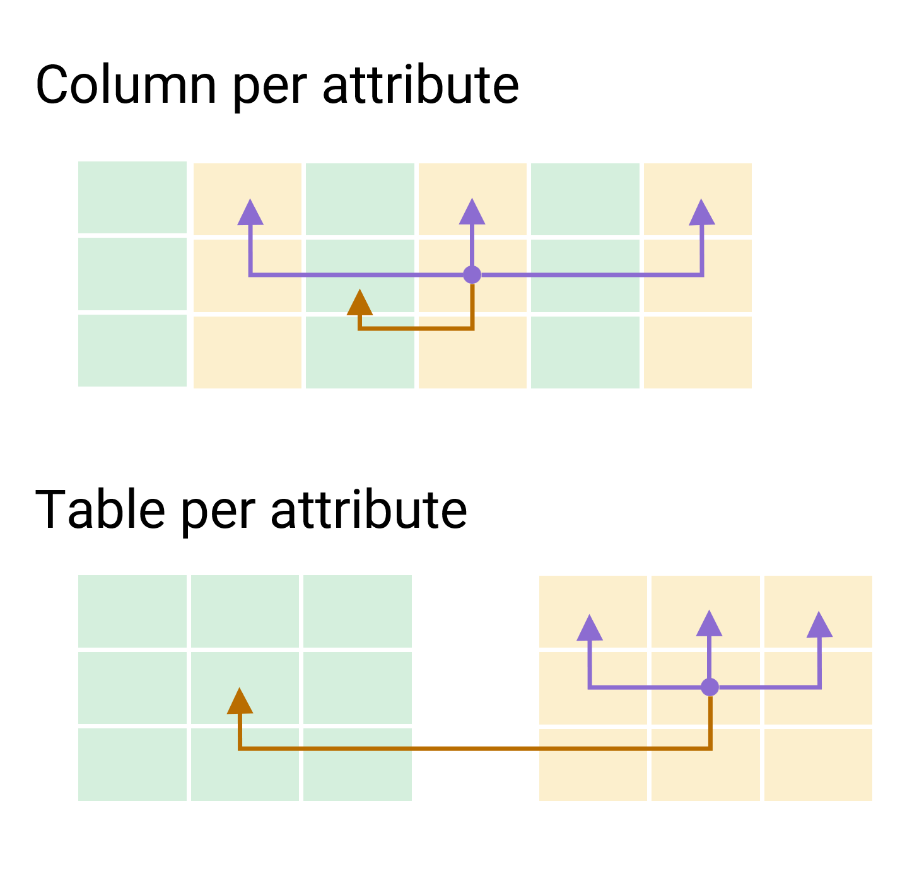
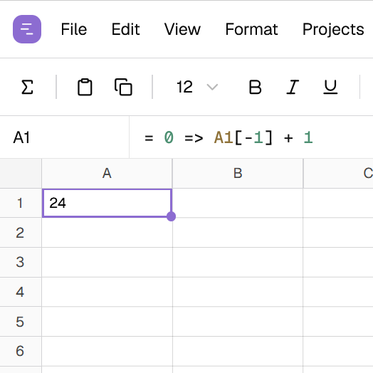
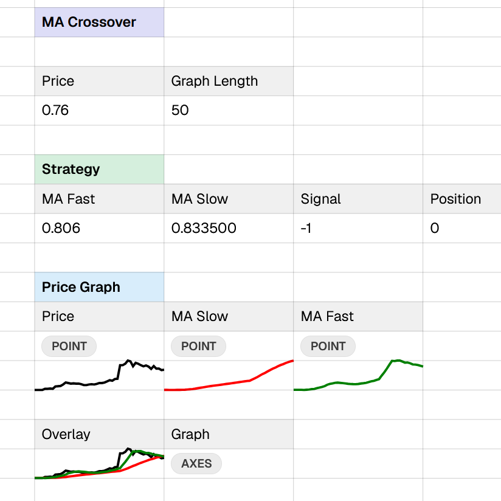
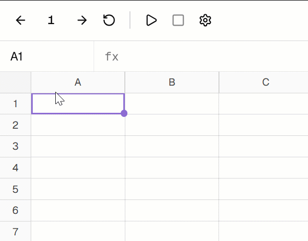
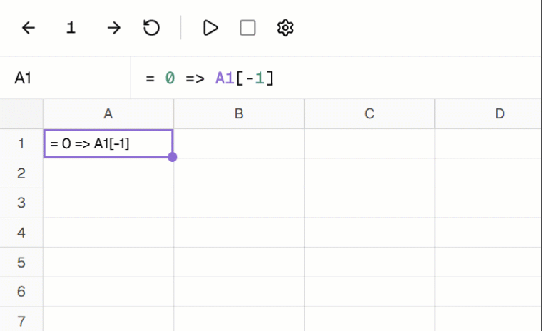
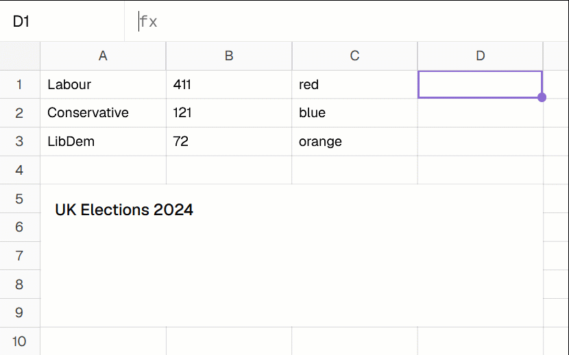

Tomas Petricek & Tomáš Boďa
Charles University, Prague





Rows for time steps
Columns left for entities and their properties
Two ways of encoding attributes in a sheet
Study participants recognize this as painful



A1 = 0 => A1[-1] + 1
A1[-1] to access past values
=> to specify initial value
Compare formula with Lustre!
nat = 0 -> pre(nat) + 1;

A1 = 0 => A1[-1] +
IF(KEYPRESS("A"), 1, 0)

COLUMNOVERLAY, FILLCOLORA1[-1] creates \(@\; 1\) requirement at A1\(\dfrac{(x:\tau)\in\Gamma}{\Gamma \;@\; 0 \vdash x : \tau} \qquad \dfrac{\Gamma \;@\; n \vdash e : \tau}{\Gamma \;@\; (n+1) \vdash \textbf{prev}~e : \tau}\)
\(\boxed{\textnormal{Formula evaluation:}~~\sigma \vdash F \Downarrow V }\)
\(\boxed{\textnormal{Sheet evaluation:}~~\sigma \Downarrow \gamma}\)
\(\dfrac {\forall a \in \textnormal{dom}(\sigma)~.~\gamma(a) = V \wedge \sigma \vdash \sigma(a) \Downarrow V} {\sigma \Downarrow \gamma}\)
We still don't know why spreadsheets work...
Language research applied to spreadsheets!
Think about systems, not languages!
Tomas Petricek & Tomáš Boďa